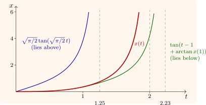

3.4 Comparison theorems
Theorem 3.4.1 (Comparison). Let \(f\) be continuous on \([t_0, t_1] \times \mathbb R\) and Lipschitz in \(x\) with constant \(L\). Let \(v\) be the solution of \(v' = f(t, v)\) on \([t_0, t_1]\), and \(u\) a differentiable function with \[ u'(t) \leq f\bigl (t, u(t)\bigr ) \quad (t_0 \leq t \leq t_1), \qquad u(t_0) \leq v(t_0) . \] Then \(u(t) \leq v(t)\) on \([t_0, t_1]\). The same holds with all inequalities reversed: a function with \(u' \geq f(t, u)\) and \(u(t_0) \geq v(t_0)\) stays above \(v\).
Proof. Let \(w = u - v\), so \(w(t_0) \leq 0\) and \(w' \leq f(t, u) - f(t, v) \leq L|w|\). Suppose \(w(t_2) > 0\) for some \(t_2\), and let \(t^* = \sup \{t \leq t_2 : w(t) \leq 0\}\), so \(w(t^*) = 0\) and \(w > 0\) on \((t^*, t_2]\). There \(w' \leq Lw\), so \((e^{-Lt}w)' \leq 0\), and \(e^{-Lt}w\) is non-increasing on \([t^*, t_2]\). Then \(e^{-Lt_2}w(t_2) \leq e^{-Lt^*}w(t^*) = 0\), a contradiction. □
A function satisfying \(u' \leq f(t, u)\) is a subsolution, and one satisfying \(u' \geq f(t, u)\) a supersolution. The theorem says that a subsolution starting below a solution stays below it, and a supersolution starting above stays above. It is a genuinely one-dimensional result: in \(\mathbb R^n\) there is no order to preserve, except for special (“cooperative”) systems.
Example 3.4.2. The Riccati equation \(x' = t^2 + x^2\), \(x(0) = 0\), has no elementary solution, and its blow-up time \(T\) cannot be computed in closed form; comparison traps it.
Lower bound. Fix \(s > 0\). On \([0, s]\), \(t^2 \leq s^2\), so \(x\) is a subsolution of \(y' = s^2 + y^2\), whose solution from \(0\) is \(s\tan (st)\), finite for \(st < \pi /2\). If \(s^2 < \pi /2\) then \(s\tan (st)\) is finite on \([0, s]\), so \(x\) is bounded there and \(T > s\). Letting \(s \uparrow \sqrt {\pi /2}\) gives \(T \geq \sqrt {\pi /2} = 1.2533\).
Upper bound. For \(t \geq 1\), \(x' \geq 1 + x^2\), so \(x\) is a supersolution of \(y' = 1 + y^2\) from \(y(1) = x(1)\), whose solution \(\tan (t - 1 + \arctan x(1))\) blows up at \(t = 1 + \pi /2 - \arctan x(1)\). With \(x(1) = 0.3502\) (computed numerically), \(T \leq 2.2339\).
The numerical value is \(T = 2.0031\) (Software 3.6.1); Figure 6 shows the solution between its comparison functions.

Questions on this section
Stuck on something here? Ask below and it stays attached to this topic.